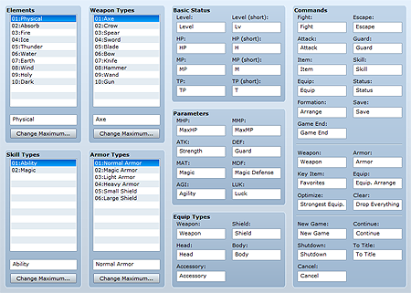

Term data is collection of data defining the names of game commands, parameters, and so on. You can ramp up the originality of your game by changing the standard terms to fit the world you are creating.
Enter terms within the space provided in each box. Terms that are too long may not fully display within the game.

A list of element names. To change a name, select it by clicking it on the list and then enter a name in the box below it. To change the number of items on the list, click Change Maximum and then specify a new maximum number.
These names will be used when making selections on the editor. The specific content of elements is defined by the data for skills, weapons, and so on.
A list of names for skill types specified by the Skill Type setting in the skill database. Changing names and other operations are the same as with the Elements setting.
A list of names for weapon types specified by the Weapon Type setting in the weapon database. Changing names and other operations are the same as with the Elements setting.
A list of names for armor types specified by the Armor Type setting in the armor database. Changing names and other operations are the same as with the Elements setting.
The names of the level, HP, MP, and TP parameters. Specify the terms you want to apply to the existing names. For the (Short) settings, specify an abbreviated form of the name to be displayed in the status window of battle screens and other places where space is limited.
The names of parameters. Specify the terms you want to apply to the existing names.
The names of the slots for equipment. Specify the terms you want to apply to the existing names.
The names of commands and choices displayed on the game's menu screens and so on. Specify the terms you want to apply to the existing names.